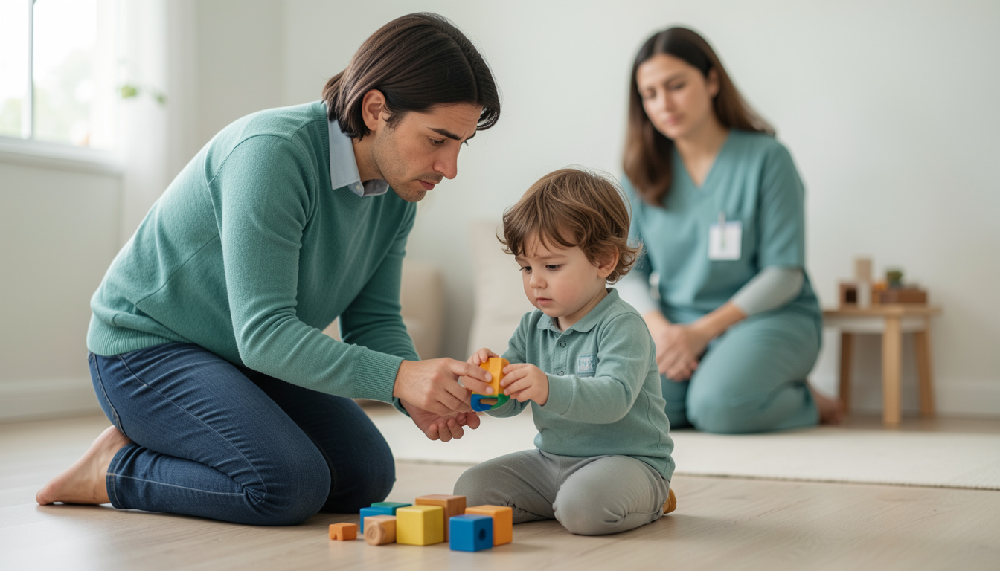
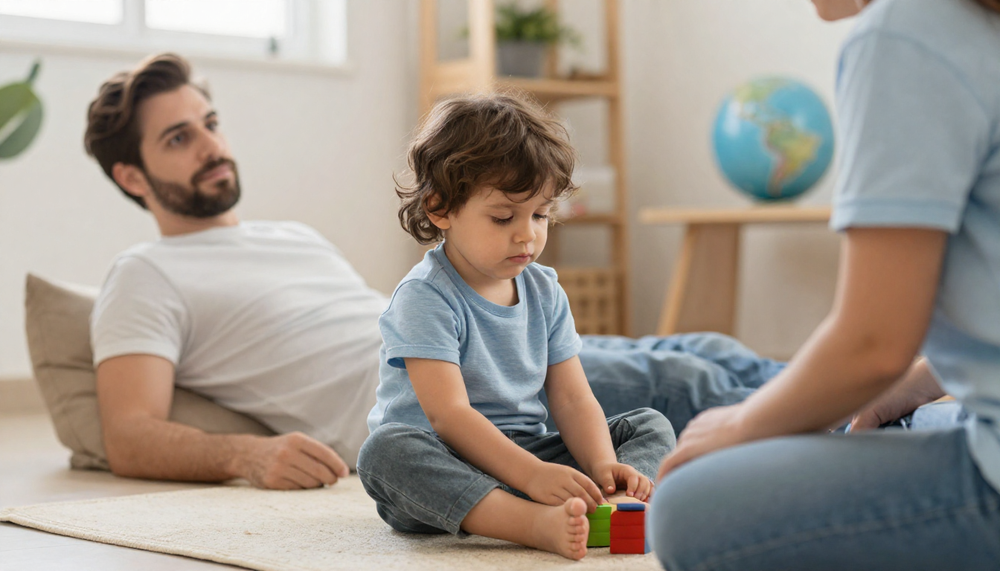
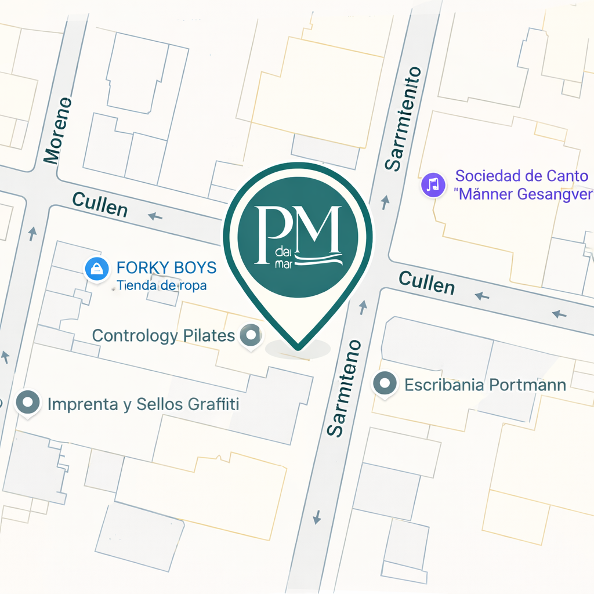

Piel de Mar - Acompañamiento profesional



tu hij@ y vos
- Miramos al niño en su totalidad, no solo sus dificultades
- Trabajamos desde el respeto, sin forzar procesos ni etiquetas
- Creamos un espacio donde podés hablar sin sentirte juzgada
- Te damos orientaciones claras que podés aplicar hoy mismo
Momentos de conexión
Rituales simples para fortalecer el vínculo con tu hijo cada día
Bienestar familiar
Estrategias para cultivar la calma y el equilibrio en casa
Te acompañamos en cada etapa
Estimulación temprana
Actividades personalizadas para potenciar el desarrollo integral de tu hijo según su edad y necesidades.
Conocer másAcompañamiento emocional
Herramientas para que tu hijo aprenda a identificar y gestionar sus emociones de forma saludable.
Conocer másNeurodesarrollo infantil
Detección temprana de señales de alerta e intervención oportuna para optimizar su desarrollo.
Conocer másAcompañamiento familiar
Orientación para madres y padres que buscan una crianza consciente, respetuosa y conectada.
Conocer másLo que dicen las familias
"Llegamos con muchas dudas y angustia. El acompañamiento fue fundamental para entender qué le pasaba a nuestro hijo y cómo ayudarlo. Hoy vemos cambios reales."
"No solo trabajaron con nuestra hija, nos dieron herramientas para aplicar en casa. Sentimos que somos parte activa de su desarrollo."
"La diferencia está en el trato humano y en que realmente escuchan nuestras preocupaciones. No nos sentimos juzgados, sino acompañados."
"Encontré en Piel de Mar un espacio donde me escucharon sin juzgarme. Las orientaciones fueron claras y pudimos aplicarlas enseguida en casa."
"Lo que más valoro es que trabajan con toda la familia. No solo con el niño. Eso hace una diferencia enorme en los resultados."
Recursos gratuitos para acompañar el desarrollo

Te atendemos hoy
Mandanos un mensaje por WhatsApp y te respondemos en el día para encontrar el mejor horario.
Agendar por WhatsAppPodés elegir consulta presencial en Esperanza o virtual por videollamada
Hablemos

La forma más rápida de contactarnos
+54 9 3425 004018
Cullen 1619, Esperanza, Santa Fe.
Ver indicaciones
También podés escribirnos por correo
contacto@pieldemar.comLunes a viernes
9:00 a 18:00 hs